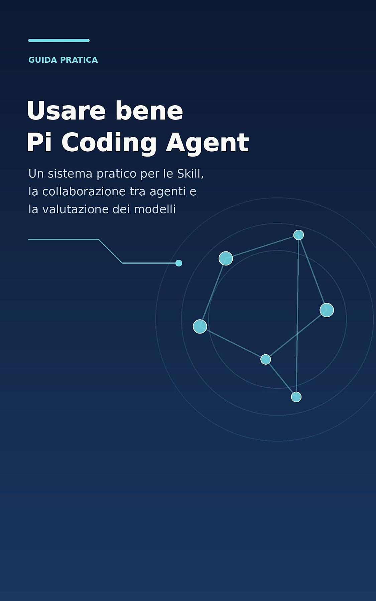

Usare bene Pi Coding Agent
Un sistema pratico per le Skill, la collaborazione tra agenti e la valutazione dei modelli

Usare bene Pi Coding Agent
Un sistema pratico per le Skill, la collaborazione tra agenti e la valutazione dei modelli
Una risposta generata dall’IA può sembrare convincente senza che il lavoro sia davvero finito. Usare bene Pi Coding Agent mostra come trasformare una richiesta in un flusso di lavoro circoscritto e verificabile, con risultati nominati, permessi espliciti, criteri di accettazione ed evidenze che dimostrano che il risultato esiste. Partendo dalle basi di Pi, il libro presenta Skill, Extension, configurazione prudente di un progetto e Oh My Pi come prodotto distinto, derivato da Pi. Prosegue con metodi concreti per definire i ruoli degli agenti, organizzare collaborazione e passaggi di consegne, valutare modelli, sceglierli considerando i costi e impostare il routing. Un caso di studio completo collega questi metodi a un flusso di produzione editoriale, dalla pianificazione alla preparazione di un ebook candidato alla pubblicazione. I 31 capitoli includono: • Flussi di lavoro passo passo, prompt riutilizzabili, checklist ed esercizi. • Un workbook offline completo, utilizzabile senza un account per modelli. • Indicazioni per esaminare i permessi degli strumenti, proteggere le credenziali e ripristinare le modifiche. • Metodi di valutazione che considerano errori e lavoro di correzione umana, non solo lunghezza o sicurezza apparente delle risposte. • Una distinzione esplicita tra comportamenti documentati, esempi datati ed elementi ancora da verificare. Il libro si rivolge a principianti a proprio agio con il computer e a professionisti che vogliono rendere più affidabile il lavoro assistito dall’IA. Non sostiene che un modello specifico sia il migliore, gratuito o disponibile ovunque. Comandi Pi, ID dei modelli, prezzi, regole dei provider e requisiti delle piattaforme possono cambiare: consulta la documentazione ufficiale aggiornata prima di seguire istruzioni dipendenti dalla versione.